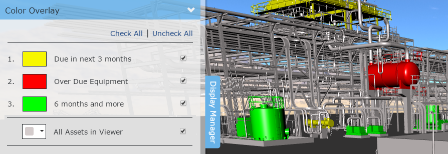
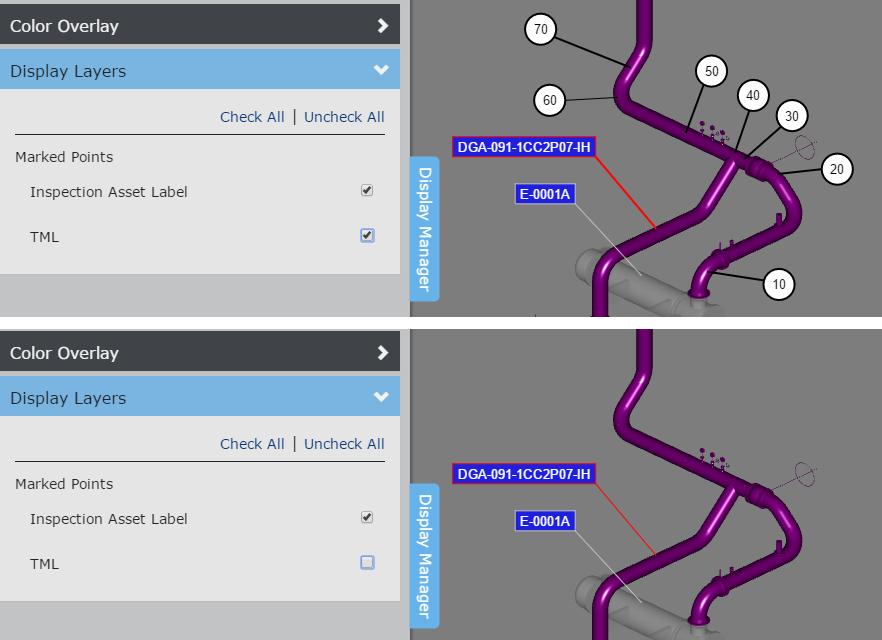
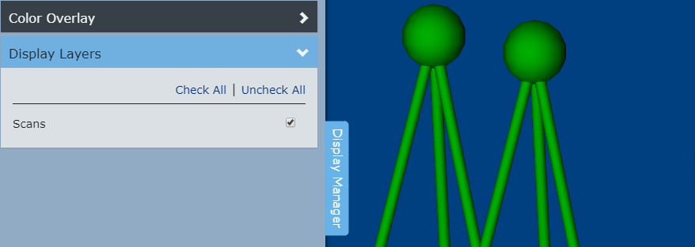

Display Manager
The Knowledge Book display manager lets you manage what is displayed in the viewer. The display manager can be displayed by clicking the "Display Manager" tab on the left-hand side of the Knowledge Book viewer. Click the "Display Manager" tab again to hide the display manager.

Color Overlay
Assets in your Knowledge View may be organized in Asset Lists. An asset can belong to zero or more asset lists. Asset lists have a color. Click the Color Overlay expander to turn on/off the asset list colors. Turning on the color of an asset list will override the assets native color. An asset which belongs to multiple asset lists will be displayed with the color of the asset list with the highest priority. Each Knowledge View will by default always have an 'All Assets in Viewer' list. You can change the color of this default list. You cannot change the color of asset lists. You cannot change the priority of asset lists.

Turning off the color of an asset list will display its assets with their native (inherent) color.

|
V-Suite CORE Knowledge View activated Display Filters are converted and transferred to V-Suite Asset Lists. |

Display Layers
Marked Point Tags and Labels are drawn on the viewer's 2D Canvas. Click the Display Layers expander to display or hide the 2D Canvas layers.

If the knowledge view contains scans, the display manager will include a section to display or hide scans in the 3D viewer.


Routes
Any Routes included in the knowledge view will be listed in the Routes section of the display manager. The Routes list allows for individual routes to be displayed or hidden inside of the 3D viewer.

Selecting the checkbox next to one of the routes will display the 3D representation of the route inside of the viewer.
Once a route is selected and displayed in the viewer, you can take advantage of the routes commands.

|
Zoom to the selected Way Point. |
Align the camera to the selected Way Point and switch the viewer into the Follow Camera mode. See Routes for detailed information related to the Follow Camera mode. |

Use the Check All link to display all available routes in the viewer; click Uncheck All to hide all routes.